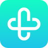

<!-- 以下是组件，在vue里，是写在template的部分，se开头的组件都可在组件看板中找到说明 -->
<se-row class="home" :class="{ 'home--logined': isLogined }" align="end">
  <se-col class="home__logo" :span="12">
    
    <p class="logo__title">ityun-360小程序</p>
  </se-col>
  <se-col class="home__avatar" :span="12">
    <span class="avatar__txt">Hello Worlds!</span>
  </se-col>
  <se-col class="home__more" :span="12">
    <!-- <span class="more__text" type="text" @click="navigateToMore()"
      >更多介绍</span
    > -->
	<se-button type="default" @click="navigateToMore()">更多介绍</se-button>
	<se-button type="default" @click="navigateToSlider()">轮播图</se-button>
	<se-button type="default" @click="navigateToDemo()">项目入口</se-button>
	<!-- <se-button type="default" @click="getLocation()">获取位置</se-button>
	<se-button type="default" @click="getUserInfo()">获取用户信息</se-button> -->
	<!-- <se-button type="default" open-type="share">分享</se-button> -->
  </se-col>
</se-row>
